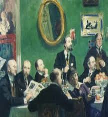

Творчість імпресіоністів визначила межу між новим і новітнім мистецтвом. Імпресіонізм прагнув відтворити найточніші суб’єктивні відчуття та переживання, настрій та швидкоплинне враження автора від реального світу в його русі та мінливості. Важливим принципом імпресіонізму був відхід від типовості. В мистецтво ввійшла миттєвість, фрагментарність композиції, випадковий погляд, несподівані ракурси і точки зору, свіжість та безпосередність сприйняття. Головні риси імпресіонізму дістали свій розвиток в постімпресіонізмі.
